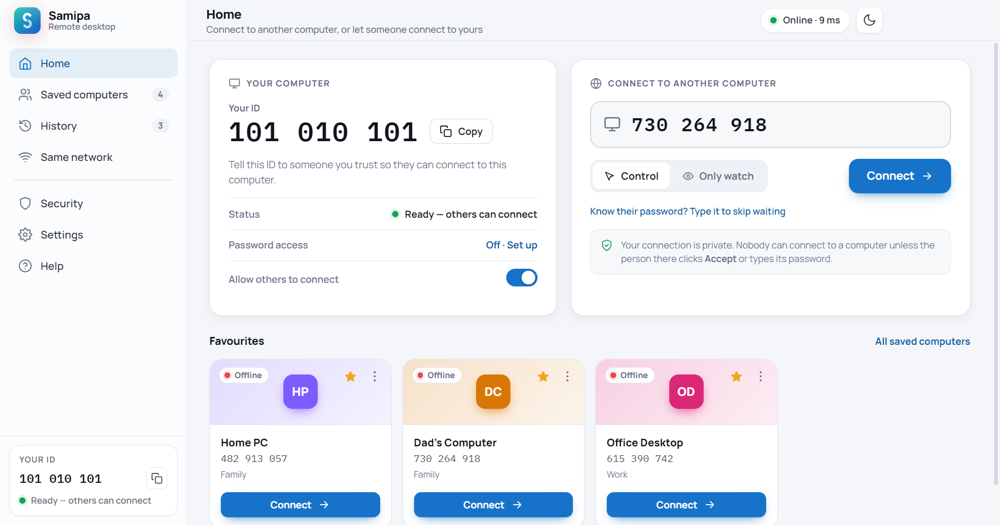

Full control
Use their mouse and keyboard as if you were sitting there. Works on scaled and multi-monitor screens.
Type their 9-digit ID, they click Accept, and their screen appears on yours. Fix a problem for your parents, reach your office PC from home, or show a friend where to click. No account, no setup, no cost.

Every computer with Samipa gets its own 9-digit ID, like a phone number. It never changes, and only people you give it to can ask to connect.
Download Samipa for Windows or Ubuntu and open it. Your ID is on the Home screen.
Ask the other person for their ID, type it, and choose Control or Only watch.
Their screen appears in about two seconds. For your own PCs, set a password and skip the Accept.
All of it free, with no limits on time or number of computers.
Use their mouse and keyboard as if you were sitting there. Works on scaled and multi-monitor screens.
Reach your own computers without anyone clicking Accept. Samipa asks for the password when you connect.
Drag files across in either direction. Received files go to your Downloads folder.
Type messages or switch on your microphone and talk while you work.
Circle the button they should click. Your drawing appears on their real screen.
Send the text you copied so they can paste it, like a long link or a code.
Ctrl+Alt+Del, Alt+Tab, the Windows key and more, in one click.
Save a session as a video, handy for showing someone how something is done.
Name and group the computers you help, mark favourites, and see who is online.
See a screen without touching it, for a demo or when someone just wants to show you.
Connects directly for speed. If a network blocks that, it relays automatically.
A clean, modern app that follows your system theme, in plain everyday words.
No technical settings to understand. Here is what you'll see.
A remote desktop app opens your computer to another person, so Samipa is careful by default.
Install it on both computers. Already have Samipa? Install on top; your ID and saved computers stay.
fbe49c50b6b3177abf9eb3985fb16b884b45b24ea8e081c2be9bf1cba091b0a3sudo apt install ./Samipa-1.4.1.deb85756b88e4a836bb8348fe853270857ad8f80e398fc7b172c2fd28396e5a429aSamīpa is Sanskrit for near, because Samipa makes any computer feel close by. It was called OpenDesk until version 1.4. Installing Samipa replaces OpenDesk automatically and keeps your ID, saved computers and password.
Yes. No trial, no time limits, no account, no ads. It's a personal project, built to be useful.
Yes. It does the everyday jobs people use those apps for: see and control another computer, send files, chat, and reach your own PCs with a password. It's free, with no account and no session limits. Samipa is an independent project and isn't affiliated with either company.
Over the internet, from anywhere. The two computers don't need to be on the same Wi-Fi. They connect directly when they can; if a network blocks that, Samipa relays the connection automatically.
Yes, both computers need Samipa installed and open. It's quick to install, and there's nothing to set up.
No. You have to click Accept each time, unless you turn on password access for your own computer. You can also switch off Allow others to connect on the Home screen to block every request.
Windows shows "Windows protected your PC" for apps that aren't code-signed with a paid certificate. Click More info → Run anyway. You can check the file is genuine with the SHA-256 checksum above.
The first start of the day can take up to a minute while Samipa gets ready. After that it connects in seconds.
Sign out, click the gear icon on the login screen, choose Ubuntu on Xorg, and sign in again. The newer Wayland session blocks remote control.